DifferentialExpressionAnalysisPeak.RmdHere, we will perform differential expression analysis based on DESeq2 and edgeR to get differentially accessible (DA) peaks. Similar to those in Differential Expression Analysis (RNA-seq), DEbPeak provides six differents charts to visualize these DA peaks (VolcanoPlot, ScatterPlot, MAPlot, RankPlot, GenePlot and DEHeatmap).
The data used here are from In vivo CD8+ T cell CRISPR screening reveals control by Fli1 in infection and cancer:
The raw data:
# read the raw data
atac.counts = utils::read.table(file = "/home/songyabing/R/learn/tmp/DEbPeak/GSE149836_combUnionReadsWithLabels.txt",
sep = "\t", header = T)
head(atac.counts)## chr start end X290_1_S4 X290_2_S5 X360_1_S6 X360_2_S7 R_1_S2 R_2_S3
## 1 chr1 3131803 3131948 2 15 0 3 4 0
## 2 chr1 3210046 3210121 0 1 0 1 0 0
## 3 chr1 3265577 3265648 3 2 0 8 5 2
## 4 chr1 3345206 3345286 3 2 1 0 2 1
## 5 chr1 3505380 3505504 3 4 0 12 4 2
## 6 chr1 3513642 3513745 0 0 2 3 13 2To perform analysis (including Quality Control), we need to preprocess the data (row: feature, column: sample):
# read the processed data, the feature is consist of peak region, gene symbol and annotated binding region.
atac.counts.file = system.file("extdata", "RA_ATAC_count.txt", package = "DEbPeak")
atac.counts = utils::read.table(file = atac.counts.file, sep = "\t", header = T)
head(atac.counts)## Fli1KO_1 Fli1KO_2 Fli1KO_3
## chr1_GL456211_random:112828-112899|LOC100041034|DI 4 6 14
## chr1_GL456211_random:113055-113190|LOC100041034|DI 7 13 10
## chr1_GL456211_random:147874-147989|LOC100041034|DI 15 16 22
## chr1_GL456211_random:167241-167436|LOC100041034|DI 53 40 43
## chr1_GL456211_random:174677-174747|LOC100041034|I 9 6 17
## chr1_GL456211_random:199244-199444|LOC100041034|DI 23 14 26
## Fli1KO_4 WT_1 WT_2
## chr1_GL456211_random:112828-112899|LOC100041034|DI 12 10 3
## chr1_GL456211_random:113055-113190|LOC100041034|DI 11 21 31
## chr1_GL456211_random:147874-147989|LOC100041034|DI 14 23 27
## chr1_GL456211_random:167241-167436|LOC100041034|DI 54 39 46
## chr1_GL456211_random:174677-174747|LOC100041034|I 6 14 10
## chr1_GL456211_random:199244-199444|LOC100041034|DI 11 27 46If you have raw bam files of input/control and treatment samples and sample metadata, DEbPeak provides PeakMatrix to prepare the above count matrix.
And, we also need the sample metadata:
# read the processed data
atac.meta.file = system.file("extdata", "RA_ATAC_meta.txt", package = "DEbPeak")
atac.meta = utils::read.table(file = atac.meta.file, sep = "\t", header = T)
head(atac.meta)## condition
## Fli1KO_1 KO
## Fli1KO_2 KO
## Fli1KO_3 KO
## Fli1KO_4 KO
## WT_1 WT
## WT_2 WTWith above data, we can create DESeqDataSet object:
suppressWarnings(suppressMessages(library(DESeq2)))
# create dds
dds.atac <- DESeq2::DESeqDataSetFromMatrix(
countData = atac.counts, colData = atac.meta,
design = ~condition
)## Warning in DESeqDataSet(se, design = design, ignoreRank): some variables in
## design formula are characters, converting to factors
# library
suppressWarnings(suppressMessages(library(DESeq2))) # Already loaded
suppressWarnings(suppressMessages(library(edgeR)))
suppressWarnings(suppressMessages(library(DEbPeak)))To increase flexibility, DEbPeak is compatible with both DESeq2 and edgeR results. We provides standard commands to get DA peaks with both DESeq2 and edgeR.
# set control level
dds.atac$condition <- relevel(dds.atac$condition, ref = "WT")
# conduct differential expressed genes analysis
dds.atac <- DESeq(dds.atac)## estimating size factors## estimating dispersions## gene-wise dispersion estimates## mean-dispersion relationship## -- note: fitType='parametric', but the dispersion trend was not well captured by the
## function: y = a/x + b, and a local regression fit was automatically substituted.
## specify fitType='local' or 'mean' to avoid this message next time.## final dispersion estimates## fitting model and testing
# extract results
dds.atac.results <- results(dds.atac,contrast=c("condition",'KO','WT'))
dds.atac.results.ordered <- dds.atac.results[order(dds.atac.results$log2FoldChange,decreasing = TRUE),]
head(dds.atac.results.ordered)## log2 fold change (MLE): condition KO vs WT
## Wald test p-value: condition KO vs WT
## DataFrame with 6 rows and 6 columns
## baseMean log2FoldChange lfcSE
## <numeric> <numeric> <numeric>
## chr8:94825359-94825432|Ciapin1|P 12.10658 6.43921 1.52702
## chr3:105628355-105628501|Ddx20|I 11.18000 6.32317 1.52344
## chr1:118440678-118440831|2900060B14Rik|I 7.83684 5.79091 1.56965
## chr1:165368382-165368517|Dcaf6|I 6.14017 5.43928 1.61963
## chr16:59434969-59435053|Gabrr3|I 5.70677 5.34867 1.63142
## chr11:20780454-20780545|Aftph|DI 5.39047 5.26962 1.63661
## stat pvalue padj
## <numeric> <numeric> <numeric>
## chr8:94825359-94825432|Ciapin1|P 4.21686 2.47728e-05 0.00126570
## chr3:105628355-105628501|Ddx20|I 4.15058 3.31633e-05 0.00159881
## chr1:118440678-118440831|2900060B14Rik|I 3.68931 2.24864e-04 0.00689256
## chr1:165368382-165368517|Dcaf6|I 3.35834 7.84110e-04 0.01786577
## chr16:59434969-59435053|Gabrr3|I 3.27854 1.04345e-03 0.02191561
## chr11:20780454-20780545|Aftph|DI 3.21985 1.28258e-03 0.02530960
atac.edgeR=DGEList(counts=atac.counts, group=atac.meta$condition)
atac.edgeR <- calcNormFactors(atac.edgeR)
atac.edgeR$samples$group <- relevel(atac.edgeR$samples$group, ref="WT")
design <- model.matrix(~atac.edgeR$samples$group)
atac.edgeR <- estimateDisp(atac.edgeR, design)
fit <- glmQLFit(atac.edgeR, design)
qlf <- glmQLFTest(fit, coef=2)
all.res <- topTags(qlf,n=nrow(atac.edgeR$counts))$table
head(all.res)## logFC logCPM F
## chr1:24612887-24616152|Col19a1|E -0.289687 15.328812 354.3361
## chr2:146197847-146198364|Cfap61|I -2.240169 5.098303 330.5501
## chr13:74528968-74529954|Zfp825|DI -1.683876 6.121681 248.1321
## chr8:105874405-105874857|Edc4|5U 3.602722 4.205464 232.7117
## chr16:97401751-97402110|Bace2|I -2.972395 3.446204 203.3962
## chr17:13552532-13553181|2700054A10Rik|I -1.588283 5.411427 175.7008
## PValue FDR
## chr1:24612887-24616152|Col19a1|E 2.972132e-49 3.029227e-44
## chr2:146197847-146198364|Cfap61|I 4.119077e-47 2.099102e-42
## chr13:74528968-74529954|Zfp825|DI 6.285243e-39 2.135327e-34
## chr8:105874405-105874857|Edc4|5U 3.039325e-37 7.744275e-33
## chr16:97401751-97402110|Bace2|I 6.970483e-34 1.420877e-29
## chr17:13552532-13553181|2700054A10Rik|I 1.699629e-30 2.887131e-26
# VolcanoPlot for DESeq2
VolcanoPlot(dds.atac.results.ordered,signif="pvalue",l2fc.threshold=0.3,label.num=2,
point.alpha = 0.8, label.color=c("purple","green"),tick.trans = NULL)## Differential expression analysis with DESeq2!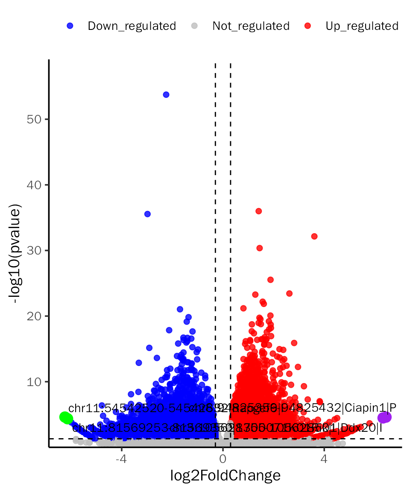
# VolcanoPlot for edgeR
VolcanoPlot(all.res,signif="PValue",l2fc.threshold=0.3,label.num=2,point.alpha = 0.8,
label.color=c("purple","green"),tick.trans = NULL)## Differential expression analysis with edgeR!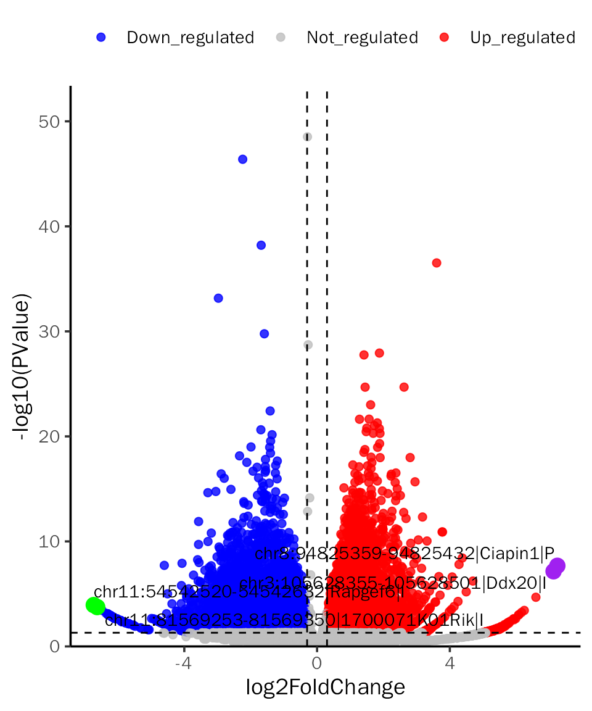
# ScatterPlot for DESeq2
ScatterPlot(deobj = dds.atac,deres = dds.atac.results.ordered,group.key = "condition",
ref.group = "WT",signif="pvalue",l2fc.threshold=0.3,label.num = 2,
point.alpha = 0.8,label.color=c("purple","green"))## Differential expression analysis with DESeq2!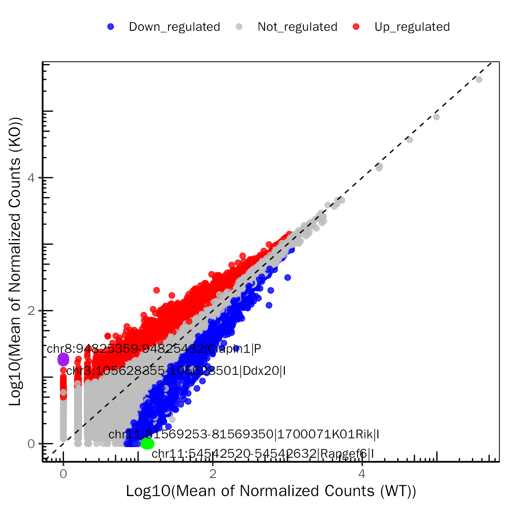
# ScatterPlot for edgeR
ScatterPlot(deobj = atac.edgeR,deres = all.res,group.key = "condition",
ref.group = "WT",signif="PValue",l2fc.threshold=0.3,label.num = 2,
point.alpha = 0.8,label.color=c("purple","green"))## Differential expression analysis with edgeR!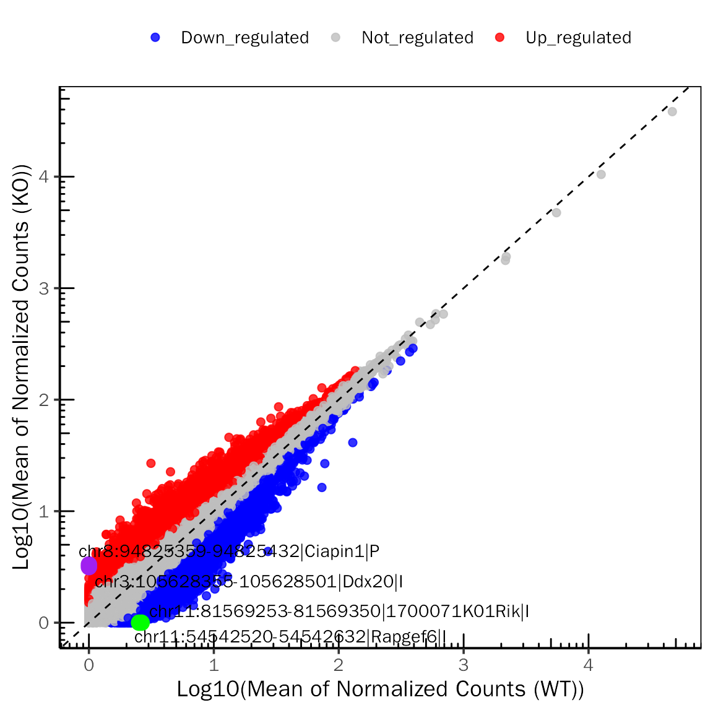
# MAPlot for DESeq2
MAPlot(dds.atac.results.ordered,signif="pvalue",l2fc.threshold=0.3,label.num=2,
point.alpha = 0.8, label.color=c("purple","green"))## Differential expression analysis with DESeq2!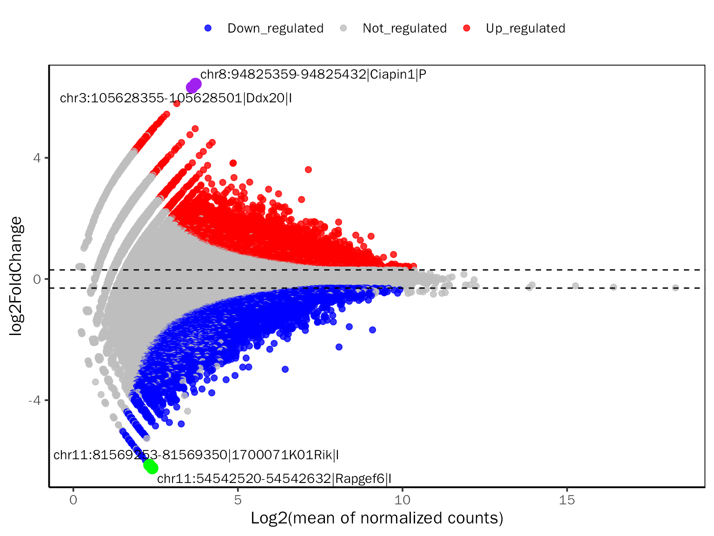
# MAPlot for edgeR
MAPlot(all.res,signif="PValue",l2fc.threshold=0.3,label.num=2,point.alpha = 0.8,
label.color=c("purple","green"))## Differential expression analysis with edgeR!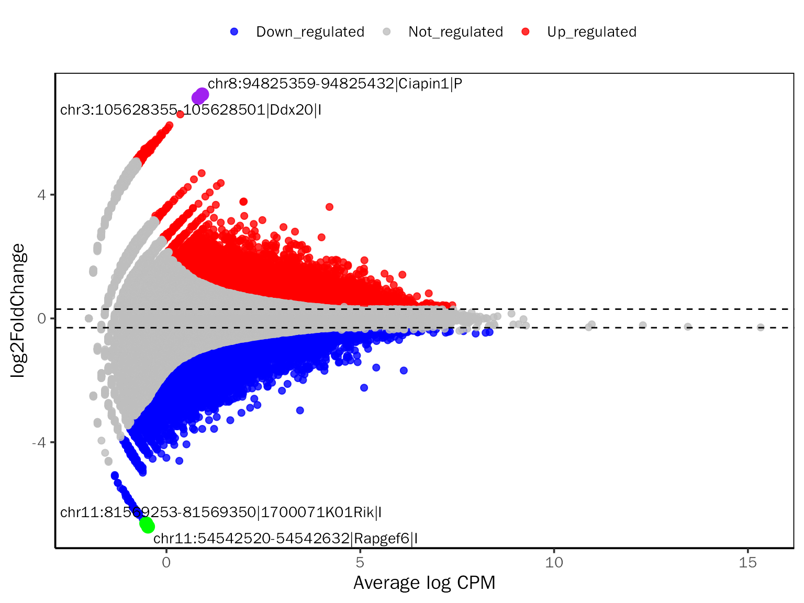
# RankPlot for DESeq2
RankPlot(dds.atac.results.ordered,signif="pvalue",l2fc.threshold=0.3,label.num=2,
point.alpha = 0.8, label.color=c("purple","green"))## Differential expression analysis with DESeq2!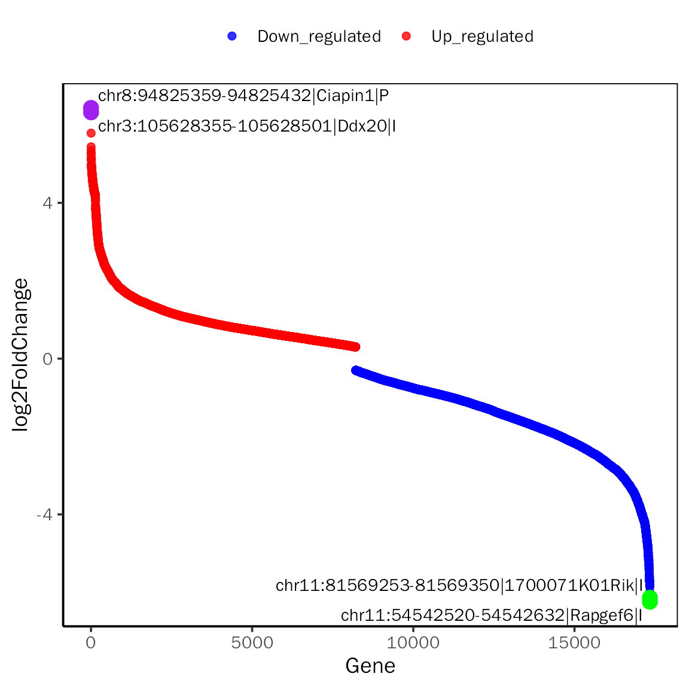
# RankPlot for edgeR
RankPlot(all.res,signif="PValue",l2fc.threshold=0.3,label.num=2,point.alpha = 0.8,
label.color=c("purple","green"))## Differential expression analysis with edgeR!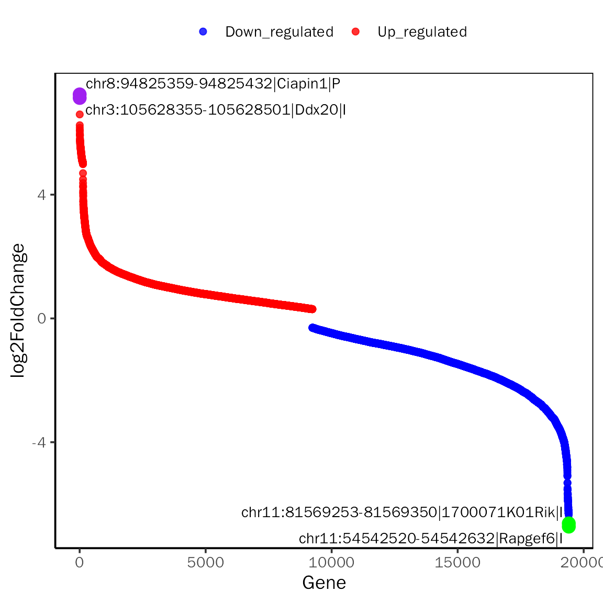
# GenePlot for DESeq2
GenePlot(deobj = dds.atac,deres = dds.atac.results.ordered,group.key = "condition",
ref.group = "WT",fill.color=c("red","blue"), fill.alpha = 0.8,
gene.num =2,signif="pvalue",l2fc.threshold=0.3)## Differential expression analysis with DESeq2!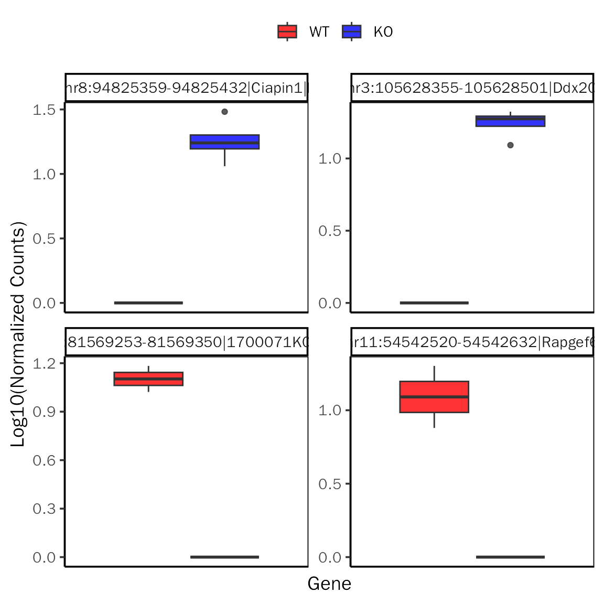
# GenePlot for edgeR
GenePlot(deobj = atac.edgeR,deres = all.res,group.key = "condition",
ref.group = "WT",fill.color=c("red","blue"),fill.alpha = 0.8,
gene.num =2,signif="PValue",l2fc.threshold=0.3)## Differential expression analysis with edgeR!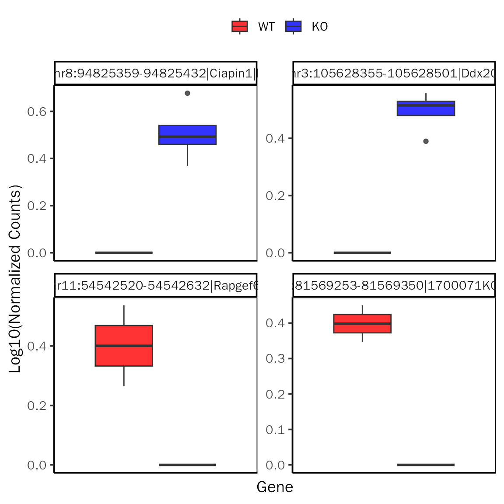
# DEHeatmap for DESeq2
DEHeatmap(deobj = dds.atac,deres = dds.atac.results.ordered,group.key = "condition",
ref.group = "WT", signif="pvalue",l2fc.threshold=0.3)## Differential expression analysis with DESeq2!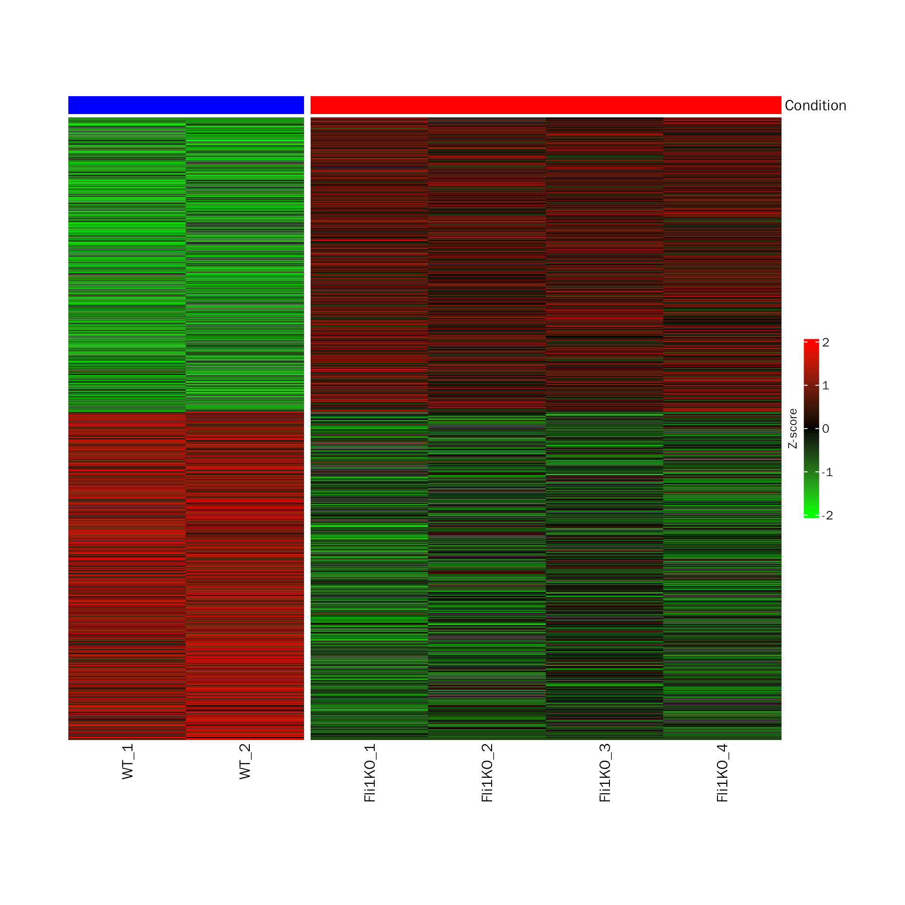
# DEHeatmap for edgeR
DEHeatmap(deobj = atac.edgeR,deres = all.res,group.key = "condition",
ref.group = "WT", signif="PValue",l2fc.threshold=0.3)## Differential expression analysis with edgeR!## R version 4.0.3 (2020-10-10)
## Platform: x86_64-conda-linux-gnu (64-bit)
## Running under: CentOS Linux 7 (Core)
##
## Matrix products: default
## BLAS/LAPACK: /home/softwares/anaconda3/envs/r4.0/lib/libopenblasp-r0.3.12.so
##
## locale:
## [1] LC_CTYPE=zh_CN.UTF-8 LC_NUMERIC=C
## [3] LC_TIME=zh_CN.UTF-8 LC_COLLATE=zh_CN.UTF-8
## [5] LC_MONETARY=zh_CN.UTF-8 LC_MESSAGES=zh_CN.UTF-8
## [7] LC_PAPER=zh_CN.UTF-8 LC_NAME=C
## [9] LC_ADDRESS=C LC_TELEPHONE=C
## [11] LC_MEASUREMENT=zh_CN.UTF-8 LC_IDENTIFICATION=C
##
## attached base packages:
## [1] stats4 stats graphics grDevices utils datasets methods
## [8] base
##
## other attached packages:
## [1] DEbPeak_1.0.0 edgeR_3.32.1
## [3] limma_3.46.0 DESeq2_1.30.1
## [5] SummarizedExperiment_1.20.0 Biobase_2.50.0
## [7] MatrixGenerics_1.2.1 matrixStats_0.58.0
## [9] GenomicRanges_1.42.0 GenomeInfoDb_1.26.7
## [11] IRanges_2.24.1 S4Vectors_0.28.1
## [13] BiocGenerics_0.42.0
##
## loaded via a namespace (and not attached):
## [1] rsvd_1.0.3
## [2] ggvenn_0.1.9
## [3] apeglm_1.12.0
## [4] Rsamtools_2.6.0
## [5] rsvg_2.1
## [6] foreach_1.5.1
## [7] rprojroot_2.0.2
## [8] crayon_1.4.1
## [9] V8_3.4.2
## [10] MASS_7.3-53.1
## [11] nlme_3.1-152
## [12] backports_1.2.1
## [13] sva_3.38.0
## [14] GOSemSim_2.25.0
## [15] rlang_1.0.3
## [16] XVector_0.30.0
## [17] readxl_1.3.1
## [18] irlba_2.3.5
## [19] GOstats_2.56.0
## [20] BiocParallel_1.24.1
## [21] rjson_0.2.20
## [22] bit64_4.0.5
## [23] glue_1.6.2
## [24] DiffBind_3.0.15
## [25] mixsqp_0.3-43
## [26] pheatmap_1.0.12
## [27] parallel_4.0.3
## [28] AnnotationDbi_1.52.0
## [29] DEFormats_1.18.0
## [30] base64url_1.4
## [31] tcltk_4.0.3
## [32] DOSE_3.23.2
## [33] haven_2.3.1
## [34] tidyselect_1.1.0
## [35] rio_0.5.27
## [36] XML_3.99-0.6
## [37] tidyr_1.1.3
## [38] ggpubr_0.4.0
## [39] GenomicAlignments_1.26.0
## [40] xtable_1.8-4
## [41] magrittr_2.0.1
## [42] evaluate_0.14
## [43] ggplot2_3.3.5
## [44] cli_3.3.0
## [45] zlibbioc_1.36.0
## [46] hwriter_1.3.2
## [47] rstudioapi_0.13
## [48] bslib_0.3.1
## [49] GreyListChIP_1.22.0
## [50] fastmatch_1.1-3
## [51] BiocSingular_1.6.0
## [52] xfun_0.30
## [53] askpass_1.1
## [54] clue_0.3-59
## [55] gson_0.0.9
## [56] cluster_2.1.1
## [57] caTools_1.18.2
## [58] tidygraph_1.2.0
## [59] tibble_3.1.0
## [60] ggrepel_0.9.1
## [61] Biostrings_2.58.0
## [62] png_0.1-7
## [63] withr_2.4.1
## [64] bitops_1.0-6
## [65] ggforce_0.3.3
## [66] RBGL_1.66.0
## [67] plyr_1.8.6
## [68] cellranger_1.1.0
## [69] GSEABase_1.52.1
## [70] pcaPP_2.0-1
## [71] dqrng_0.2.1
## [72] coda_0.19-4
## [73] pillar_1.5.1
## [74] gplots_3.1.1
## [75] GlobalOptions_0.1.2
## [76] cachem_1.0.4
## [77] GenomicFeatures_1.42.2
## [78] fs_1.5.0
## [79] GetoptLong_1.0.5
## [80] clusterProfiler_4.7.1
## [81] DelayedMatrixStats_1.12.3
## [82] vctrs_0.4.1
## [83] ellipsis_0.3.2
## [84] generics_0.1.0
## [85] plot3D_1.4
## [86] tools_4.0.3
## [87] foreign_0.8-81
## [88] NOISeq_2.34.0
## [89] munsell_0.5.0
## [90] tweenr_1.0.2
## [91] fgsea_1.16.0
## [92] DelayedArray_0.16.3
## [93] fastmap_1.1.0
## [94] compiler_4.0.3
## [95] abind_1.4-5
## [96] rtracklayer_1.50.0
## [97] TxDb.Hsapiens.UCSC.hg19.knownGene_3.2.2
## [98] GenomeInfoDbData_1.2.4
## [99] gridExtra_2.3
## [100] lattice_0.20-45
## [101] ggnewscale_0.4.7
## [102] AnnotationForge_1.32.0
## [103] utf8_1.2.1
## [104] dplyr_1.0.5
## [105] BiocFileCache_1.14.0
## [106] jsonlite_1.7.2
## [107] scales_1.1.1
## [108] graph_1.68.0
## [109] carData_3.0-4
## [110] sparseMatrixStats_1.2.1
## [111] genefilter_1.72.1
## [112] car_3.0-11
## [113] doParallel_1.0.16
## [114] latticeExtra_0.6-29
## [115] brew_1.0-6
## [116] checkmate_2.0.0
## [117] rmarkdown_2.14
## [118] openxlsx_4.2.3
## [119] pkgdown_1.6.1
## [120] cowplot_1.1.1
## [121] textshaping_0.1.2
## [122] forcats_0.5.1
## [123] downloader_0.4
## [124] BSgenome_1.58.0
## [125] igraph_1.3.4
## [126] survival_3.2-10
## [127] numDeriv_2016.8-1.1
## [128] yaml_2.2.1
## [129] plotrix_3.8-2
## [130] systemfonts_1.0.1
## [131] ashr_2.2-47
## [132] SQUAREM_2021.1
## [133] htmltools_0.5.2
## [134] memoise_2.0.0
## [135] VariantAnnotation_1.36.0
## [136] locfit_1.5-9.4
## [137] graphlayouts_0.7.1
## [138] batchtools_0.9.15
## [139] PCAtools_2.2.0
## [140] viridisLite_0.4.0
## [141] digest_0.6.27
## [142] rrcov_1.7-0
## [143] assertthat_0.2.1
## [144] rappdirs_0.3.3
## [145] emdbook_1.3.12
## [146] RSQLite_2.2.5
## [147] amap_0.8-18
## [148] yulab.utils_0.0.4
## [149] misc3d_0.9-1
## [150] data.table_1.14.2
## [151] blob_1.2.1
## [152] ragg_0.4.0
## [153] labeling_0.4.2
## [154] splines_4.0.3
## [155] Cairo_1.5-12.2
## [156] ggupset_0.3.0
## [157] RCurl_1.98-1.3
## [158] broom_0.7.5
## [159] hms_1.0.0
## [160] colorspace_2.0-0
## [161] BiocManager_1.30.16
## [162] shape_1.4.6
## [163] sass_0.4.1
## [164] Rcpp_1.0.9
## [165] mvtnorm_1.1-2
## [166] circlize_0.4.15
## [167] enrichplot_1.10.2
## [168] fansi_0.4.2
## [169] truncnorm_1.0-8
## [170] ChIPseeker_1.33.0.900
## [171] R6_2.5.0
## [172] grid_4.0.3
## [173] lifecycle_1.0.0
## [174] ShortRead_1.48.0
## [175] zip_2.1.1
## [176] curl_4.3
## [177] ggsignif_0.6.3
## [178] jquerylib_0.1.3
## [179] robustbase_0.95-0
## [180] DO.db_2.9
## [181] Matrix_1.3-3
## [182] qvalue_2.22.0
## [183] desc_1.3.0
## [184] RColorBrewer_1.1-2
## [185] iterators_1.0.13
## [186] stringr_1.4.0
## [187] DOT_0.1
## [188] ggpie_0.2.1
## [189] beachmat_2.6.4
## [190] polyclip_1.10-0
## [191] biomaRt_2.46.3
## [192] purrr_0.3.4
## [193] shadowtext_0.0.9
## [194] gridGraphics_0.5-1
## [195] mgcv_1.8-34
## [196] ComplexHeatmap_2.13.1
## [197] openssl_1.4.3
## [198] patchwork_1.0.0
## [199] bdsmatrix_1.3-4
## [200] codetools_0.2-18
## [201] invgamma_1.1
## [202] GO.db_3.12.1
## [203] gtools_3.8.2
## [204] prettyunits_1.1.1
## [205] dbplyr_2.1.1
## [206] gtable_0.3.0
## [207] DBI_1.1.1
## [208] highr_0.8
## [209] ggfun_0.0.6
## [210] httr_1.4.2
## [211] KernSmooth_2.23-18
## [212] stringi_1.5.3
## [213] progress_1.2.2
## [214] reshape2_1.4.4
## [215] farver_2.1.0
## [216] annotate_1.68.0
## [217] viridis_0.6.1
## [218] Rgraphviz_2.34.0
## [219] xml2_1.3.2
## [220] bbmle_1.0.24
## [221] systemPipeR_1.24.3
## [222] boot_1.3-28
## [223] geneplotter_1.68.0
## [224] ggplotify_0.1.0
## [225] Category_2.56.0
## [226] DEoptimR_1.0-11
## [227] bit_4.0.4
## [228] scatterpie_0.1.7
## [229] jpeg_0.1-8.1
## [230] ggraph_2.0.5
## [231] pkgconfig_2.0.3
## [232] rstatix_0.7.0
## [233] knitr_1.37